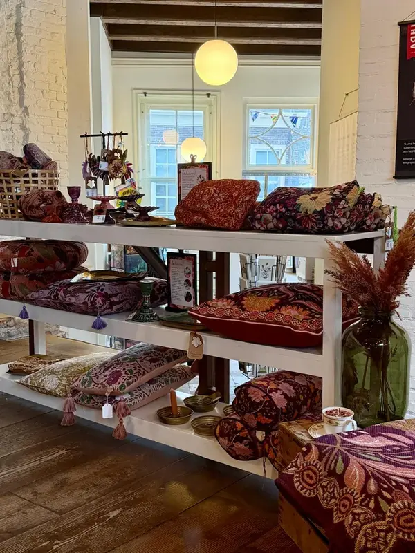

De makers The makers
Vilten met gevoel Felt with feeling
In India werkt een groep blinde ambachtslieden in een van de ateliers van Sjaal met Verhaal. Mensen die normaal weinig kans hebben op werk, maken hier prachtige viltproducten. Een eerlijk loon, een veilige werkplek — en producten die jij in onze winkel vindt.
In India, a group of blind artisans work in one of the ateliers of Sjaal met Verhaal. People who normally have little chance of employment create beautiful felt products here. A fair wage, a safe workplace — and products you'll find in our shop.